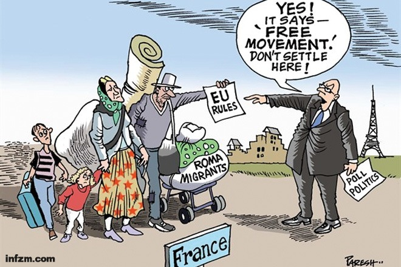

返回主页
人口迁徙天赋人权

大家知道中国的户籍和城乡二元。你知道俄国革命后仍然限制人民流动吗？或者，在最左的法国，他们一样反对移民。在广东，土客很难和谐相处。为啥？
欧洲民粹主义卷土重来
不管被比喻成什么，蚂蚁蝗虫或Spotted Hyena，政治经济的生存空间（Lebensraum）的争夺才是关键。
Lebensraum im Osten ist ein politischer Begriff, der mit der germanischen oder arischen Besiedlung (settlement/colony)
FIFA SAY NO TO RACISM. 为啥？龙应台的镜像理论起作用了。
上图描述法国不欢迎罗马尼亚移民，认为这些人是巴黎街头犯罪的元凶。在经济不景、左翼执政的法国，排外与民粹的情绪很浓郁。漫画中罗马尼亚移民家庭拿着“欧盟规则”要求进入法国，手捏“民意政治”的法国政客说：就是嘛！欧盟规则说自由流动，所以不要待在这儿，你继续流动不要停下哈。
Attempts to build a multicultural society in Germany have "utterly failed", Chancellor Angela Merkel says.
Multikulti in Deutschland, dieser (this) Ansatz (approach) ist gescheitert, absolut gescheitert.
Which Germany Should Modern China Emulate?
Milton Friedman (弗里德曼)号称老右派。在Friedman前面，还有Hayek、Popper等猛男。右派的著名人物有Churchill、Goldwater、Reagan、Thatcher等，而美国左派以民主党为首，通常首鼠两端，属于骑墙派。以下是流行的左派著作：
The Conscience of a Liberal: Reclaiming America from the Right, Paul R. Krugman
Capital in the Twenty-First Century, Thomas Piketty
The European Dream: How Europe's Vision of the Future Is Quietly Eclipsing, Jeremy Rifkin
中国愚弄了世界？
Ginny Weasley(Hogwarts)：Robber Barons, ���y, Plutocrat, Faction, das Herrenvolk, Law, Reason
Klugheit, Einfallsreichtum, Entschlossenheit und �C leider �C eine gewisse Missachtung der Regeln
Cleverness, resourcefulness, determination, and - unfortunately - a certain disregard for the rules.
version:1.0; jobnet@188.com © retter2012.com